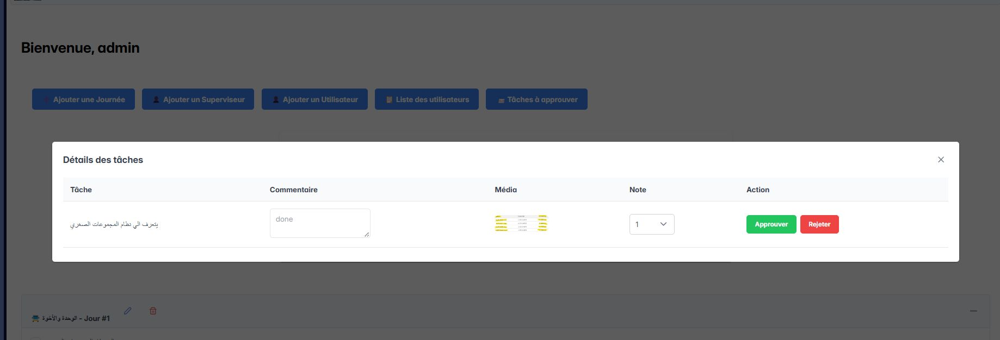

Scout Management Platform

I recently built a web platform for Scouts and Supervisors,
aimed at streamlining task tracking, improving supervision, and enhancing
accountability within scout programs.
🧠Key Features:
- ✅ Two distinct roles: Admin & Scout
- ✅ Admin can create and manage daily journey plans
- ✅ Scouts submit completed tasks with justification + photo upload
- ✅ Supervisors review, validate, and assign scores to each task
ğŸ› ï¸ Tech Stack:
- Frontend: React.js + Redux
- Backend: Node.js + Express (RESTful APIs)
- Authentication: JWT for secure role-based access
- Database: Azure SQL
- Cloud Storage: for handling user-submitted images
- Deployment: Vercel (frontend) & Render (backend)
💡 What I’ve gained from this project:
- Designing scalable full-stack architecture
- Implementing secure role-based access control
- Managing cloud-based image storage
- Building real-world user flows from scratch
View on GitHub
⬅ Back to Projects